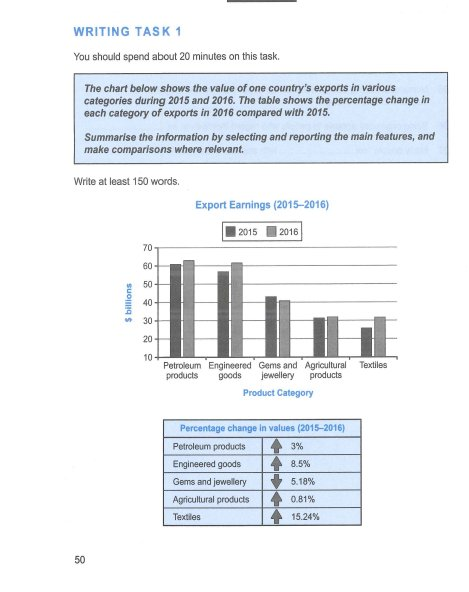
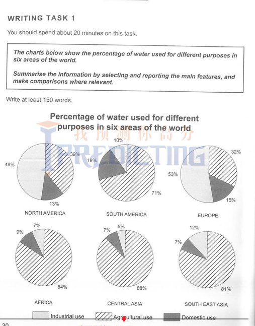

Full Timed Writing Test: Choose Option A or Option B
Hi Ning! For this weekend’s homework, choose one of the two full IELTS Academic Writing tests below and complete both Task 1 and Task 2 in a single 60-minute sitting. Your three priorities for this run are simple: finish both tasks inside the clock, clear both minimum word counts (150+ and 250+), and protect your final 2-minute check on each task.
Task 1: 18 mins writing + 2 mins check.
Task 2: 38 mins writing + 2 mins check.
Task 1: At least 150 words (aim for 165–185w).
Task 2: At least 250 words (aim for 265–290w).
Stop writing at 42:00 and 02:00 remaining. Run your 5-habit Sniper check before putting your pen down.
Export Earnings (2015–2016)
The chart below shows the value of one country’s exports in various categories during 2015 and 2016. The table shows the percentage change in each category of exports in 2016 compared with 2015.
Summarise the information by selecting and reporting the main features, and make comparisons where relevant.
Write at least 150 words.

Making Household Recycling a Legal Requirement
Some people claim that not enough of the waste from homes is recycled. They say that the only way to increase recycling is for governments to make it a legal requirement.
To what extent do you think laws are needed to make people recycle more of their waste?
Give reasons for your answer and include any relevant examples from your own knowledge or experience. Write at least 250 words.
Percentage of Water Used in Six Areas of the World
The charts below show the percentage of water used for different purposes in six areas of the world.
Summarise the information by selecting and reporting the main features, and make comparisons where relevant.
Write at least 150 words.

Governments Spending on Railways Rather Than Roads
Governments should spend money on railways rather than roads.
To what extent do you agree or disagree with this statement?
Give reasons for your answer and include any relevant examples from your own knowledge or experience. Write at least 250 words.